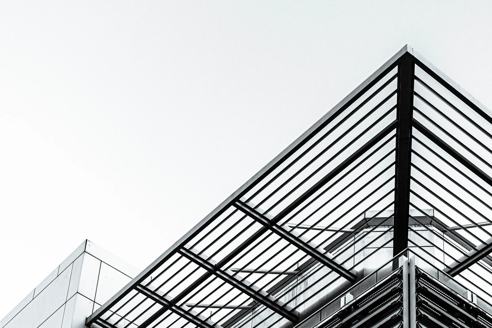
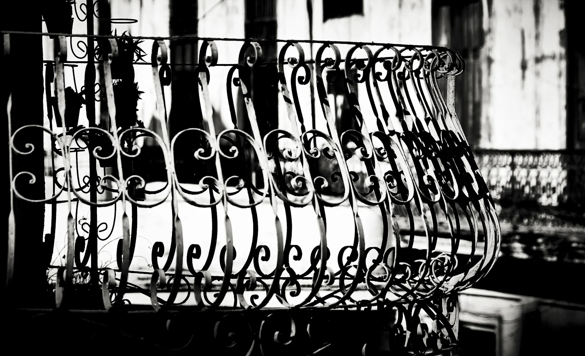
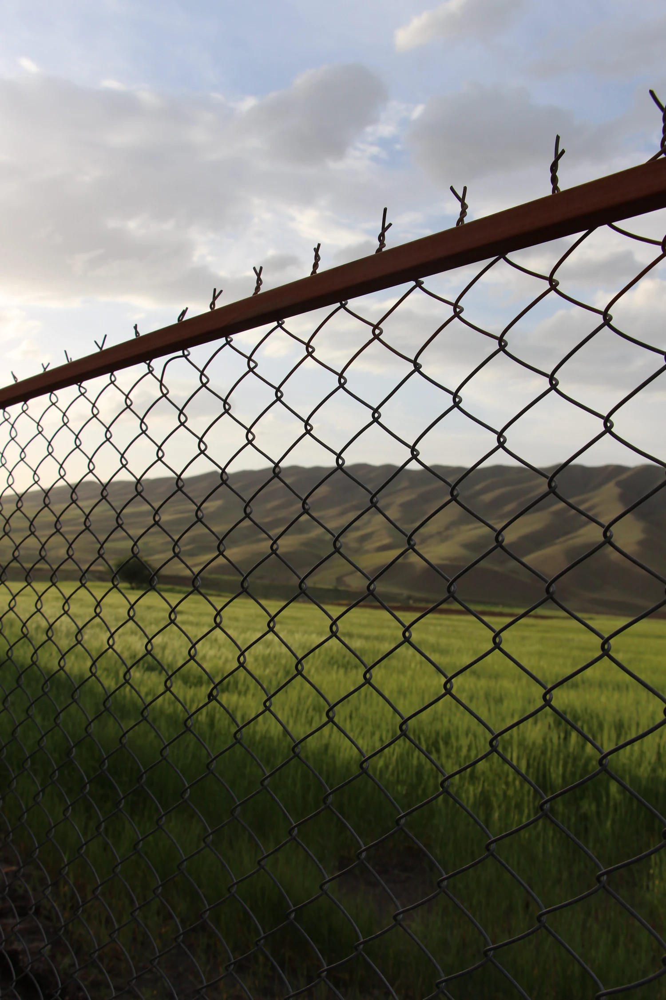
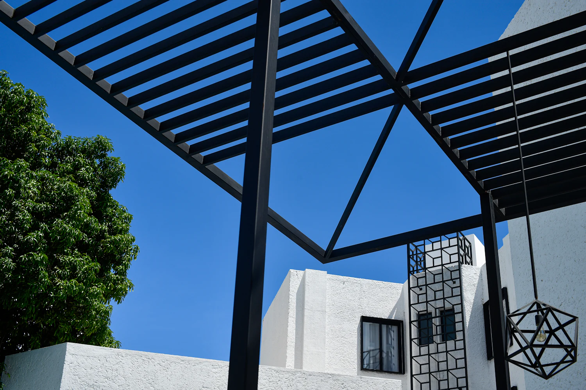
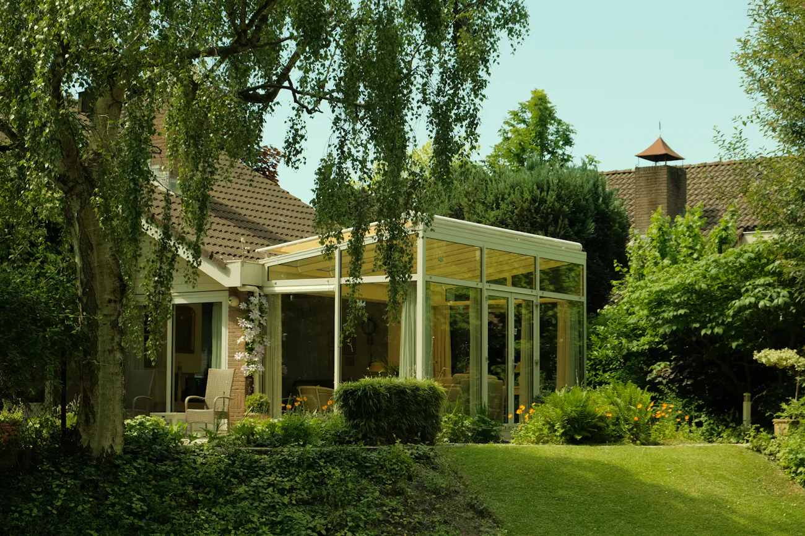
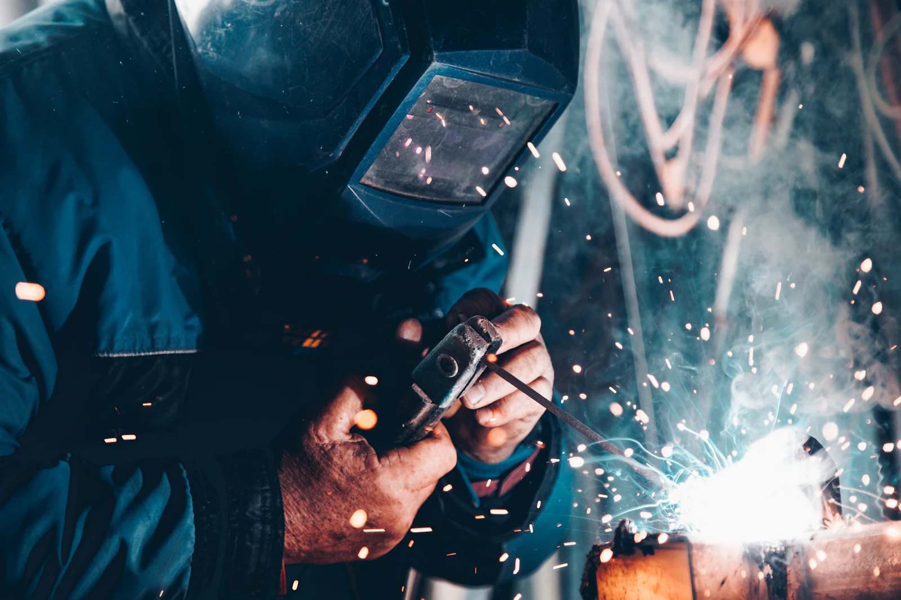
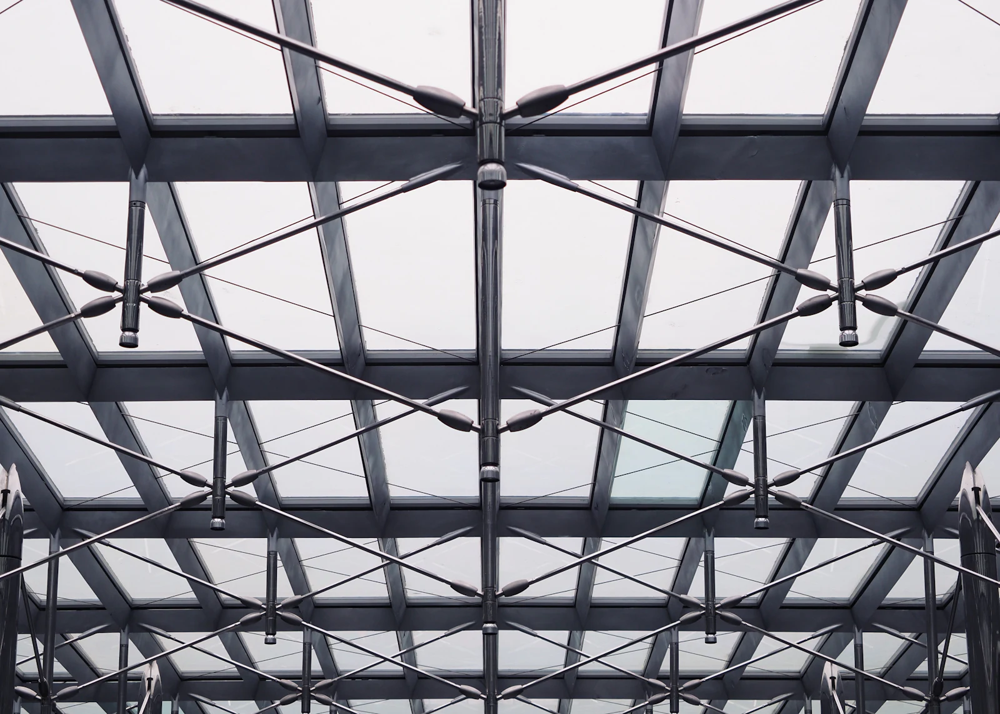
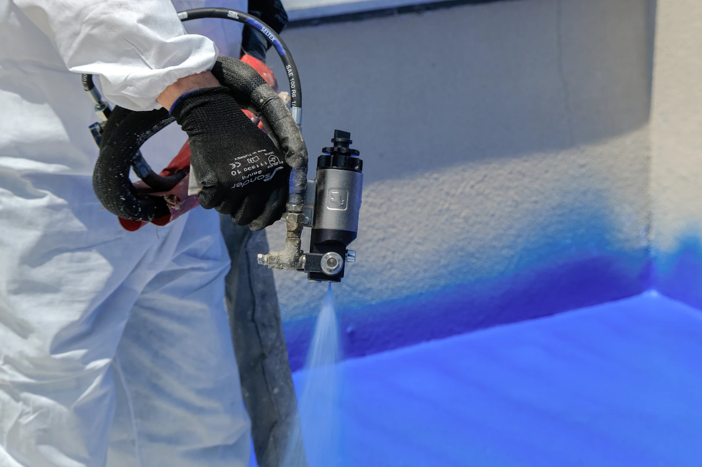

Çelik Konstrüksiyon ve Demir Doğramada Güvenilir Çözüm
Ankara ve çevresinde çelik konstrüksiyon, ferforje, çit sistemleri, balkon kapatma ve fason kaynak-boya işleri.
Hizmetlerimiz
-

Çelik Konstrüksiyon Yapılar & Çatılar
Çelik konstrüksiyon yapılar ve çatı sistemleri imalatı yapıyoruz.
-

Ferforje & Demir Doğrama
Korkuluk, bahçe kapısı ve demir doğrama işleri; ölçüye göre imalat.
-

Tel Örgü & Panel Çit Sistemleri
Tel örgü ve panel çit sistemlerinin imalatı ile montajı.
-

Çardak Yapımı
Metal çardak ve gölgelik strüktürlerinin imalatı ile montajı.
-

Balkon Kapatma & Özel İmalat
Balkon kapatma işleri ve özel imalat basketbol/futbol potaları.
-

Fason Kaynak, Onarım & Endüstriyel Boya
Fason kaynak, metal onarım ve endüstriyel boya hizmetleri.



Görseller temsilidir.
- Ölçüye Göre Özel İmalat
- Yerinde Keşif
- Ankara Batı Hattında Hizmet
Müşteri Yorumları
Keşif ve bilgi için arayın
0539 345 1146